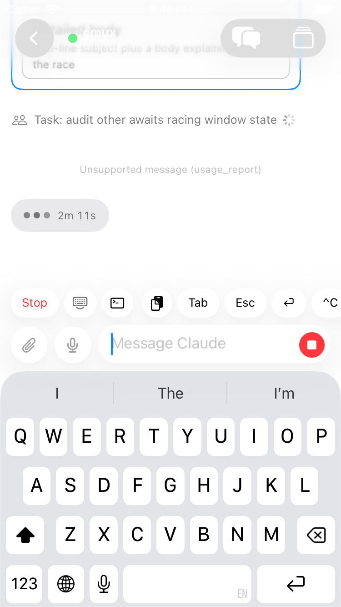
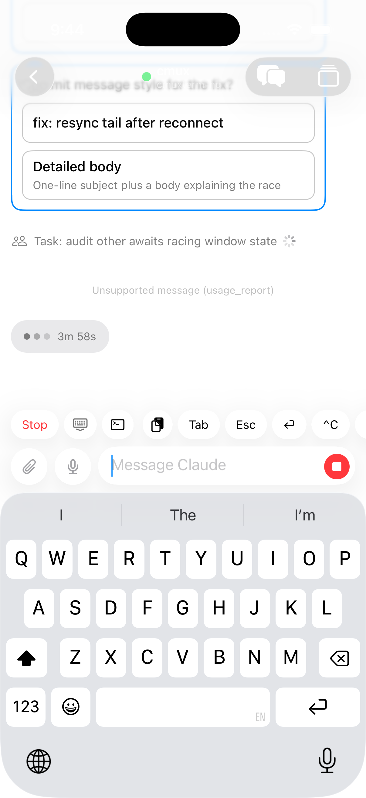
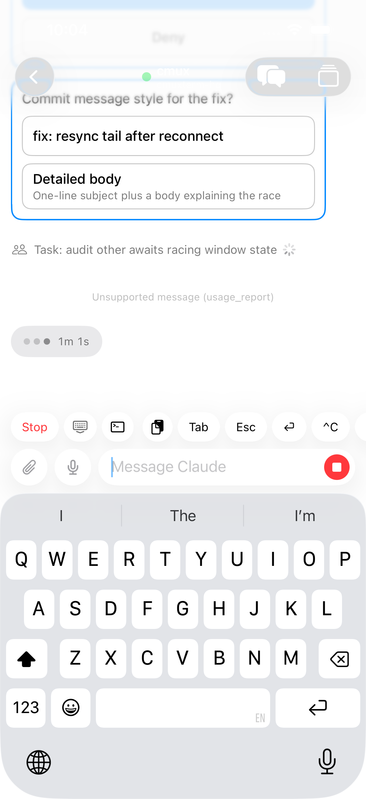
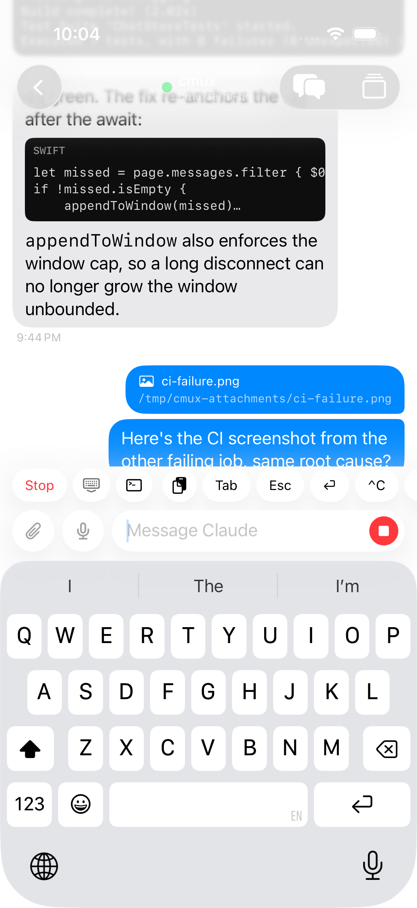
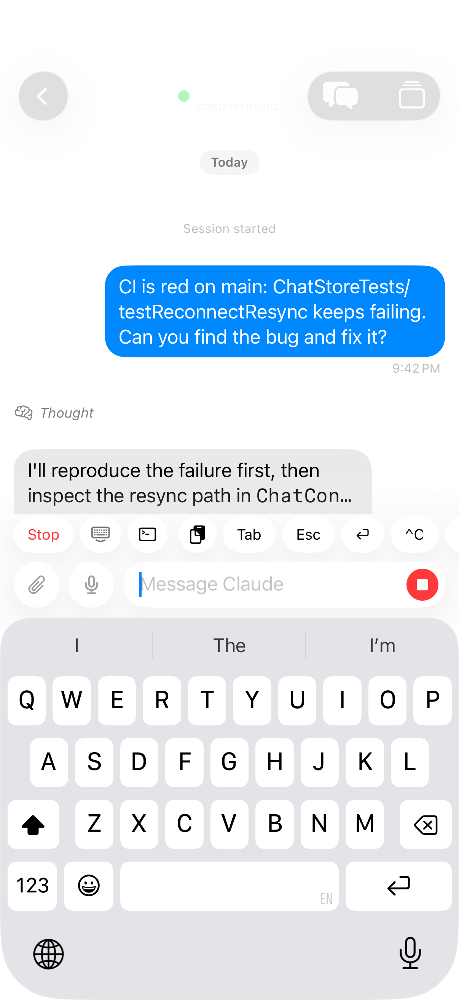
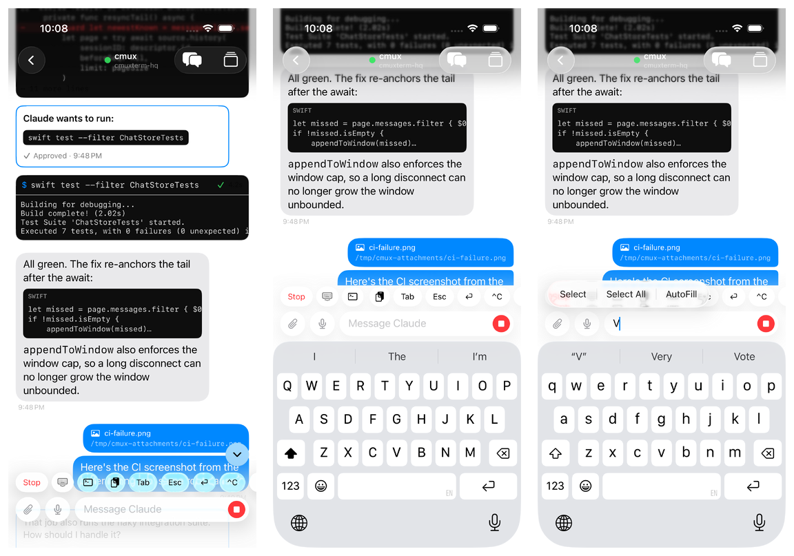

Shortcut Gap Proof
PR https://github.com/manaflow-ai/cmux/pull/7241, commit d3caf5bab1, tag sgap.
The reported defect was a black vertical block between the leading attachment and mic buttons, the shortcut row, and the keyboard/composer material.
The fix removes the 14 pt solid systemBackground hard-stop overlay from ChatAccessoryChipRow. The scroll region now relies on its existing rectangular clipping and keeps only the trailing fade when content overflows.
Result: SE and Pro simulator screenshots show the keyboard-up composer row without the black block. The tap-based XCUITest captured bottom, middle, and top scroll positions with presentationGap=0.0 after the keyboard appeared.
Steady Keyboard Screenshots


Tap-Based XCUITest States



Motion Contact Sheet

Metric Checks
| State | Keyboard Overlap | Composer Presentation Min Y | Presentation Gap | Metric File |
|---|---|---|---|---|
| Bottom | 301.0 |
449.0 |
0.0 |
metrics/pro-bottom.txt |
| Middle | 301.0 |
449.0 |
0.0 |
metrics/pro-middle.txt |
| Top | 301.0 |
449.0 |
0.0 |
metrics/pro-top.txt |
Verification
| Package tests | swift test --package-path Packages/iOS/CmuxAgentChatUI passed. |
|---|---|
| Build | xcodebuild -scheme CmuxAgentChatUI -destination 'generic/platform=iOS Simulator' -derivedDataPath /tmp/cmux-ios-shortcut-gap-agentchatui build passed. |
| Tagged reloads | macOS tag sgap built. iOS tag sgap installed on isolated SE and Pro simulators. |
| UI test | testAgentChatTranscriptKeepsTopEdgeVisibleWithKeyboardAcrossScrollPositions passed on the isolated Pro simulator. |
| Review | Autoreview reported no actionable findings. Greptile and CodeRabbit were green on the PR. |
{kind=link}
{kind=link}
{kind=link}
{kind=link}
{kind=link}
{kind=link}